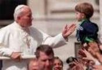
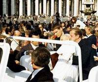
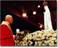
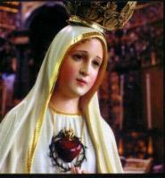
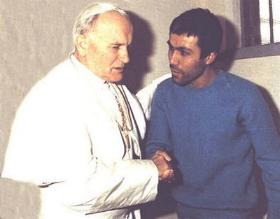

"AQUELES
DOIS TIROS"
Até hoje ficamos
pensando estarrecidos de espanto, como alguém pode chegar a tal
ponto, de querer
matar um Papa! Um homem que somente prega o bem e a paz, ajudando a humanidade
em suas necessidades, reagindo contra a exploração, a tirania e a vaidade dos poderosos!
Na verdade, um crime em si, já é uma atitude perversa e abominável! Matar um homem
como o Papa João Paulo II é sem dúvida, uma loucura satânica, aliada a uma desumana
covardia, que só encontra manifestação em mentes doentias, ambiciosas e
dominadas pelo maligno.
João Paulo II estava em pé
na parte de trás do jipe, que lentamente circulava pela Praça São Pedro, no Vaticano.
O veiculo fez uma pausa e o Santo Padre se inclinou em direção a uma pequena menina
loura que estava lhe estendendo as mãos. Chama-se Sara e tinha apenas dois anos
de idade. Ela apertava entre os dedos da mão direita o fio de um balãozinho colorido
inflado. O Papa a segurou nos braços, suspendeu-a, como se quisesse que todos a
vissem, depois a beijou e, sorrindo, devolveu-a aos pais.

Eram 17h19min e o
povo, nas proximidades, que presenciaram a cena, sorriam felizes participando da alegria
daqueles pais. De súbito, um primeiro disparo. No mesmo momento, centenas de pombas
voaram pelo espaço como se estivessem assustadas. E sem que houvesse tempo para um
raciocínio, aconteceu o segundo tiro, e o Papa começou a cair de lado, encima do
Cardeal Stanislaw, o seu Secretário Particular, que descreve o acontecimento:
“Instintivamente olhei para o local de onde partiram os disparos. Havia
um tumulto, um jovem de traços escuros se debatia, e só depois eu viria saber, que
se tratava do agressor, um turco, Mehmer Ali Agca. Tentei sustentar o Papa, mas
ele se abandonava suavemente. Perguntei: "Onde foi?" Respondeu: "No ventre". "Está doendo?"
"Sim, dói".
A primeira bala devastou o seu abdômen, perfurando o cólon, dilacerando em
vários pontos o intestino delgado, e depois saiu, caindo no carro. A segunda
bala, depois de passar de raspão pelo cotovelo direito e fraturar o dedo
indicador da mão esquerda, feriu duas turistas americanas”.
“Alguém
gritou para irmos até a ambulância. Mas a ambulância estava do outro lado da
Praça. O jipe arrancou em plena velocidade e desceu rapidamente o pátio do
Belvedere em direção ao Faz, os Serviços de Atendimento Urgente do Vaticano,
onde, avisado nesse meio-tempo, já se encontrava o Dr. Renato Buzzonetti, médico
pessoal do Papa”.
Saia muito sangue
da ferida e, o médico decidiu leva-lo imediatamente para o Hospital Gemelli. A ambulância partiu a plena velocidade, porque a vida de
João Paulo II se extinguia lentamente. Quando chegou ao Hospital, ele perdeu a
consciência e desmaiou. Descreve o Secretário Particular:
“Compreendi que sua vida corria um grande risco. Os próprios médicos que realizaram
a operação me confessaram, mais tarde, que o operaram sem acreditarem na sobrevivência
do Papa. Havia problemas com a pressão sanguínea e com os batimentos cardíacos.
Entretanto, para mim, o pior momento foi quando o Dr. Buzzonetti se aproximou e me
pediu para ministrar ao Santo Padre a Unção dos Enfermos. Fiz isso imediatamente, mas
com o coração despedaçado, acreditando que não havia mais nada a fazer. Depois de cinco
horas de operação, alguém se aproximou de mim, não me lembro do rosto, e me disse
que a operação tinha terminado que tudo tinha corrido bem e, que por isso,
aumentavam as esperanças de vida”.
Gemelli. A ambulância partiu a plena velocidade, porque a vida de
João Paulo II se extinguia lentamente. Quando chegou ao Hospital, ele perdeu a
consciência e desmaiou. Descreve o Secretário Particular:
“Compreendi que sua vida corria um grande risco. Os próprios médicos que realizaram
a operação me confessaram, mais tarde, que o operaram sem acreditarem na sobrevivência
do Papa. Havia problemas com a pressão sanguínea e com os batimentos cardíacos.
Entretanto, para mim, o pior momento foi quando o Dr. Buzzonetti se aproximou e me
pediu para ministrar ao Santo Padre a Unção dos Enfermos. Fiz isso imediatamente, mas
com o coração despedaçado, acreditando que não havia mais nada a fazer. Depois de cinco
horas de operação, alguém se aproximou de mim, não me lembro do rosto, e me disse
que a operação tinha terminado que tudo tinha corrido bem e, que por isso,
aumentavam as esperanças de vida”.
“Os primeiros
três dias foram terríveis. O Santo Padre rezava continuamente. E sofria, sofria
muito. E sabendo da morte de seu grande amigo Cardeal Wyszynski, Primaz da
Polônia, ainda sofreu muito mais”.

Semanas após
deixou o Gemelli e voltou ao Vaticano. Todavia, tendo ocorrido algumas complicações na
sua recuperação, o Papa foi obrigado a ser internado novamente no Hospital, até que
em 14 de Agosto, véspera da Festa da Assunção de NOSSA SENHORA aos Céus,
ele pode voltar definitivamente para casa.
Todavia, antes do regresso
ao lar, no período em que começou a apresentar uma melhora acentuada no Hospital
Gemelli, Sua Santidade recordava as Aparições de NOSSA SENHORA em Fátima,
quando nossa MÃE SANTÍSSIMA transmitiu Mensagens aos três pequeninos pastores
em benefício de toda humanidade e disse um
“Segredo”, que a Irmã Lúcia guardou e na
época oportuna, escreveu e o enviou numa carta ao Papa, a qual estava guardada no
Arquivo da Congregação para a Doutrina da Fé, no Vaticano. Agora, sentindo-se mais
forte, João Paulo II começou a refletir sobre aquelas Aparições em Fátima e os últimos
acontecimentos em sua vida, justamente por causa da singular coincidência: foi no
13 de Maio de 1917 a Primeira Aparição de NOSSA SENHORA e foi no 13 de Maio
de 1981, o dia em que tentaram mata-lo na Praça do Vaticano. E vejam outra coincidência:
o ano das Aparições de NOSSA SENHORA, quando ela revelou o Segredo a Irmã Lúcia foi
em 1917 e o atentado ao Papa em 1981, ou seja, invertendo 81 dá 18, como se fosse
1918, ou seja, em continuação de 1917. Aquela semelhança de data o deixou curioso
e então, ainda no Gemelli, decidiu e pediu para ver o texto escrito pela Irmã Lúcia,
sobre o“Terceiro Segredo de Fátima”.
Descreveu o Secretário
Particular do Papa: “No dia 18 de Julho de 1981, o então
Prefeito da Congregação, Cardeal Franjo Seper, entregou ao Monsenhor Eduardo Martinez
Somalo (substituto da Secretaria de Estado) dois envelopes, um com o texto original
da Irmã Lúcia, em português e, o outro, com o texto traduzido em italiano. Monsenhor
Martinez os levou ao Gemelli e entregou ao Papa. Depois de ler o Segredo, não
teve mais dúvida: naquela visão da Irmã Lúcia reconheceu o seu próprio destino
e se convenceu de que a sua vida foi salva, ou melhor, lhe fora novamente dada,
graças à intervenção de NOSSA SENHORA, que o protegera. É verdade que a Irmã
Lúcia escreveu dizendo que na visão o bispo vestido de branco foi
morto; mas, João Paulo II escapou de uma morte quase certa. Isto significa dizer
que os acontecimentos da história, da existência humana, "não são necessariamente preestabelecidos". E que,
portanto, existe uma Providência Divina, uma poderosa mão materna capaz
de interferir e também fazer errar o mais perito profissional, que apontou
a sua arma com a certeza de matar”.
“Uma mão disparou, e outra
guiou a bala”, dizia o Santo Padre.
Aquela bala foi guardada
e levada pelo Santo Padre à Fátima. Foi incrustada na coroa de ouro de NOSSA SENHORA
DE FÁTIMA que se encontra na redoma de vidro da Capelinha das Aparições.
“QUEM
ARMOU AQUELA MÃO ASSASSINA?”
Ainda é um mistério, mas existem
fortes indícios reveladores que apontam na direção dos culpados.
Em 27 de Dezembro de 1983,
o Papa quis se encontrar com aquele homem, queria entender o seu procedimento e as
suas razões, e também, queria conceder-lhe o perdão e uma bênção para invocar a sua
conversão. E num cômodo simples da prisão de Rebibbia, sentado ao lado de Ali
Agca, com a cabeça virada para ouvi-lo melhor, o Papa se surpreendeu ao ouvir
aquela pergunta: “Por que o senhor não morreu?
Sei que mirei certo. Sei que o projétil era devastador e mortal. Então por que o senhor não
morreu”?
Revelou o Secretário Particular:
“Não assisti a conversa diretamente, pois estava a alguns metros
de distância. Mas, a minha interpretação, é que Ali Agca, um assassino profissional, estava
angustiado porque existiam forças poderosas e invisíveis, que o haviam superado
e não lhe permitiu cumprir a sua funesta missão. Ele estava atemorizado pela
existência de tais forças. Descobriu também que não havia apenas uma Fátima,
filha de Maomé, mas que também existia aquela que ele começou a chamar de A
Deusa de Fátima. E temia como ele mesmo disse que, aquela Deusa tão
poderosa se zangasse com ele e o eliminasse”.
E toda a conversa
transcorreu naquele tema. O Papa triste e decepcionado em presenciar aquele tipo
estranho de manifestação, ficou silencioso para ouvir tudo o que Ali Agca queria dizer.
Aquilo ficou gravado em sua mente e muitas vezes, lembrou-se daquele encontro, com grande
preocupação e tristeza, porque nunca ouviu aquele homem pronunciar as palavras:
“Me perdoe” Então, aquele encontro foi suficiente para esclarecer
as suas dúvidas e os acontecimentos da Praça São Pedro ficaram totalmente
transparentes: Ali Agca era um assassino profissional, vivia daquilo e se orgulhava
de fazer bem feito todos os serviços para os quais era contratado. Então ficou
evidente que aquele atentado não foi uma iniciativa particular dele, mas de
outra pessoa, que idealizou o crime e o contratou para executar o plano de
morte.
Os Jornais noticiaram
que o Papa recebeu informações preciosas sobre quem arquitetou o seu atentado…
Sobre o assunto, o Cardeal Stanislaw, Secretário Particular disse: “Falou-se muito de informações fornecidas por serviços secretos
internacionais. Bem, posso garantir que nunca chegaram ao Papa. Os Cardeais
Casaroli (Secretário de Estado), Silvestrini (então Secretário do Conselho para
Negócios Públicos) e Martinez Somalo (naquele tempo substituto) declararam
nunca terem recebido e nem ouvido qualquer informação, a respeito do atentado.
O Santo Padre chegou a aquela conclusão não porque tivesse recebido informações
específicas, mas por dedução própria. Verdadeiramente ocorreu um complô para matá-lo.
Alguém o considerava um homem perigoso e incômodo que precisava ser eliminado.
Seguindo as várias pistas que se evidenciavam, todas, sem exceções, conduziam
direta ou indiretamente a KGB russa”.
Trata-se de um fato indiscutível.
A eleição pontifícia de Karol Wojtyla provocou uma enorme perturbação nos países da
“Cortina de Ferro”
e principalmente em Moscou. Porque aquele Papa estava contribuindo de modo
decisivo para a queda do comunismo na sua Polônia, ao apoiar diretamente Lech
Walesa e o Sindicato Solidariedade. Em consequência, Sua Santidade estava ajudando
efetivamente a desmoronar o “Muro de Berlin”
e toda a
“Cortina de Ferro”, porque sempre
foi um mensageiro da paz e um combatente dos Direitos do Homem, contra a
violência e a intolerância, e por isso mesmo, era um fervoroso defensor
dos mais pobres e dos oprimidos. Estas verdades incomodaram os
Comunistas e porisso, planejaram assassinar o Papa João Paulo II.

 Próxima Página
Próxima Página
Página Anterior
Retorna
ao Índice